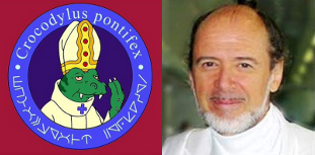
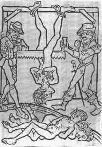

Genética
 De: La Frikipedia, la enciclopedia extremadamente seria.Es una herética ciencia ya extinguida cuyo cometido era el estudio del ADN o código de barras de Dios. Aunque antes del Sijlo XXI los genetistas gozaron de una gran relevancia, a partir de la primera década de este siglo, la implantación de la teoría creacionista, la verdadera de verdad, ha tildado todos los avances genéticos de patrañas y lo genetistas en la actualidad son quemados como brujas para gloria del señor.
De: La Frikipedia, la enciclopedia extremadamente seria.Es una herética ciencia ya extinguida cuyo cometido era el estudio del ADN o código de barras de Dios. Aunque antes del Sijlo XXI los genetistas gozaron de una gran relevancia, a partir de la primera década de este siglo, la implantación de la teoría creacionista, la verdadera de verdad, ha tildado todos los avances genéticos de patrañas y lo genetistas en la actualidad son quemados como brujas para gloria del señor.
 El Papa Cósmico y el Cardenal Rael, los dos grandes cruzados contra la Genética
Historia

Mendel obteniendo una bolsa de arroz tres delicias sobre la que basaría sus descubrimientos
La Genética fue inventada por Mendel (tercer hijo de Satanás), el año 209 antes de Tolkien, tras largas observaciones de los guisantes que venían en una bolsa de arroz tres delicias congelada.
Sus teorías fueron tachados de pamplinas por la predominante Rael, siendo Mendel acusado de hereje, borracho y cornudo entre otras acusaciones menos graves. Mendel fue uno de los hombres más brillantes de su época ya que su pira purificadora estuvo ardiendo 3 días seguidos.
Este saber no adquiriría reconocimiento, como muchas otras chorradas, hasta que no fueron recogidos por Honorio de Tarsis en sus famosos Mamotretos de Siracusa (que son unos grandes pertrechos), compendio del saber y desconocimiento de aquella época.
A pesar de los descubrimientos y avances de los genetistas, como la creación de mujeres con 4 tetas y sin cuerdas vocales, esta ciencia nunca contó con la aprobación de la Iglesia, de la ONU o de la OPEP. Así, tras la muerte y ascensión al santoral del Papa Cósmico, el Cardenal Rael, y su mano sinistra, el Arzobipo de Hollywood Tom Cruise iniciaron una cruzada contra ésta y otras ciencias heréticas como las Matemáticas, la Podología y la Columbofilia, consiguiendo, al menos en gran parte, erradicarla de la faz del mundo y del inframundo a mediados del 2008.
 Grabado jesuita en el que se ven dos sacerdotes discutiendo con varios genetistas sobre
Dios y ciencia
Otros importantes genéticos, también conocidos popularmente como "antorchas" (la mayoría descansan en paz como mantillo para los geranios del Papa) fueron:
- Watson y Holmes
- Abelardo Diniz de Newhalfordshire
- Gil Grissom
- Jose Coronado
- Josef Mengele
- Sara Montiel
- Cher
- Yoda
- Xena
- Raphael
Hitos importantes de la Genética
- 209 antes de Tolkien - Mendel promulga las tres leyes de la Herencia o leyes de Mendel.
- Sijlo IIX - Creación y descubrimiento del ADN por Abelardo Diniz de Newhalfordshire
- Mediados del siglo XIX - se desechan las teorías de Mendel al comprobarse que los guisantes amarillos eran en realidad caramelos sugus.
- 1953 - Watson y Holmes, determinan que la estructura del ADN es una doble hélice, pero tras un en estudio más profundo realizado en los calabozos del Vaticano, finalmente descubren que el ADN tiene la forma de la Santa Cruz de Caravaca.
- 30 de Septiembre de 1964 - nace Monica Bellucci, el mayor éxito de la genética.
- 1973 - Rael es nombrado Cadernal Camarlengo.
- 1974 - Yoda descubre el cromosoma Y.
- 1975 - Xena descubre el cromosoma X.
- 1995 - Tom Cruise es nombrado Arzobispo de Hollywood
- 1998 - Creación del Tomacco.
- 2008 - La Genética es prohibida por el Papa Cósmico II y el Cardenal Rael y los genetista son ajusticiados.
Ciencia
El ADN
El estudio del ADN es la base de los estudios genéticos. Ésta molécula fue llamada así por su descubridor: Abelardo Diniz de Newhalfordshire, (Diniz de Newhalfordshire Abelardo para los hijos del Reino Hundido de Gran Bretaña e Islandia del Norte), nigromante de gran reputación y de rápida combustión.
El ADN se encuentra dentro del núcleo de la célula (o lepénela), y esta formado por cuatro moléculas divinas: Timidina (T), Anodina (A), Guarrina (G) y Cinexin (C). La combinación mágica de estas moléculas provocan los genes, que son los capítulos del libro de instrucciones que Dios nos dió, pero que tras una mala traducción al congoleño, su significado nos fue ocultado. Algunos de los genes más importantes son:
- CACA: Provoca los apretones inesperados.
- AGGGGGGG: Provoca la reacción de nauseas al entrar a un WC de un festival veraniego.
- TACATACATÁ TÁTÁ: Provoca el flamenquismo cansino.
- AAA: Provoca el estado de alerta al abrir sin querer un WC ocupado
- GATA: Provoca alaridos en la época de celo.
- TATA: Gen indio que provoca la construcción de coches
- GAGA: Gen de las primeras palabras humanas y centro del habla de los borbones.
Los Cromosomas
Son los verdaderos responsables de la Herencia y según las teorías creacionistas son otra creación de Dios que, tras darse cuenta de la gran apetencia del ser humano por la reproducción, ideó los cromosoma para que transmitieran desinformación genética y la programación básica de los bebes, para así controlar y fastidiar ése diabólico hábito humano.
Según la extintas y heréticas teorías de los genéticos, los cromosomas eran grandes archivadores de ADN con forma de H y los principales responsables de que a uno le toque los pechos del padre o la mandíbula prominente de la madre.
Uno de los principales funciones de los cromosomas es decidir el sexo del nuevo humano churumbel tras la pecaminosa cópula, esto lo deciden dos cromosomas que tienen el gracioso nombre de X e Y, llamados así por sus descubridores: Xena y Yoda. Según su combinación así sera el sexo del afectado:
- XX: Tendremos entonces una mujer, hembra, varona o macha.
- XY: Tendremos entonces un varón, machito o hembro.
- XXX: Esto da lugar a una superhembra o sueca.
- XYX: Esto da lugar a un Gay, persona de vida alegre o impío.
- X: La presencia de un sólo cromosoma X -y ausencia de todos los demás- da lugar a una Jessi o a Leticia Sabater.
- Y: La presencia de un sólo cromosoma y -y ausencia de todos los demás- da lugar a un Fernando Arrabal.
- XYYYYYYYY...: Da como resultado un superhombre o negro, a Rocco Siffredi o a Nacho Vidal.
Usos y Aplicaciones
La combinación artificial y aberrante de estas bases tiene varias aplicaciones y ha servido entre otras cosas para:
- Permitir que los de CSI resuelvan sus casos.
- Crear pollos sin plumas con sabor a Vaca.
- Crear vacas con sabor a pollo.
- Explicar la existencia de la Patrulla-X y de la calvicie del Profesor Xavier.
- Excusar la incompetencia bajo pretexto que por culpa de nuestros genes, somos así de patanes.
- Clonar Dinosaurios.
- Que los gordos
tengamos tengan esperanzas de una cura.
- Que los Cani tengan esperanzas de cura.
- Clonar a Aznar.
Sus aplicaciones se antojaban infinitas si bien tras la erradicación de los genetistas en el 2008, éstas fueron frenadas en seco. No obstante se ha rescatado de la tumba de Raphael, el último gran genetista, algunos de los planes futuros que se pensaba llevar a cabo por estos herejes. Entre los más destacados estaban:
- Dominar el mundo.
- Selección genética de los seres humanos mas dotados para mejorar la raza humana, los seleccionados eran las suecas y Rocco Siffredi.
- Seguir puteando in eternis a los alumnos de Biología.
- Dominar el inframundo.
- Localizar el gen de la fe en la raza humana y sustituirlo por el gen del puré de patatas.
- Sustituir el gen de la oreja derecha por el de un transistor de radio FM estéreo.
- Dominar Jaén.
- Sustituir el gen de las glándulas productoras de saliva por otras productoras de cerveza.
- Proseguir en la búsqueda del gen de la "inteligencia" Cani y otras utopías.
¿Sabías que...
- ...la tortilla de patatas no tiene genes a no ser que sea con cebolla?
- ...las mujeres con el primer cromosoma X mas grande tienen la tetas mas grandes?
- ...los cromosomas de los franceses tienen forma de croissant?
- ...la canción Yo soy aquel de Raphael contiene cifrado en su letra el genoma del Pimiento de Padrón?
Autor(es):
- Haakjvork
- Alex2610
- Azulejos
- Timuyin
- A2
- Cibercrank
- Veni Vidi Vici
- A00999
- Genericool
- Popover boycot
Frikipedia 2005-2016, Licencia
GFDL 1.2 - Extraído por FrikiLeaks